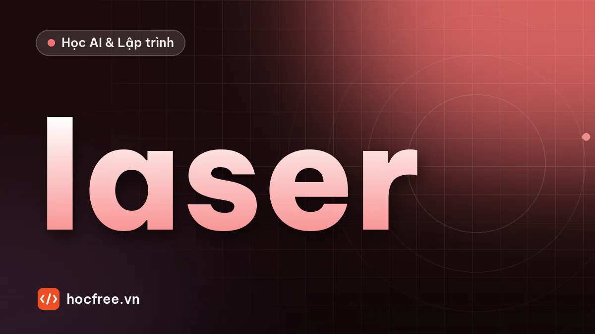

Laser tam giác: từ ảnh vạch laser đến bản đồ chiều cao
Mô phỏng profiler laser, tìm tâm vạch dưới pixel, vùng khuất và bề mặt tối, bản đồ chiều cao, đo bậc so với mặt chuẩn, đỉnh bằng fit và thể tích.

Học xong bài này, bạn sẽ
- Tìm tâm vạch laser dưới pixel
- Dựng bản đồ chiều cao, xử lý vùng khuất và bề mặt tối
- Đo chiều cao so với mặt chuẩn, đỉnh bằng fit, thể tích
Nên học trước: Cảm biến 3D: laser, ánh sáng cấu trúc, stereo, ToF
Nội dung bài viết
Bài trước cho công thức: độ phân giải chiều cao của laser tam giác xấp xỉ ΔX/sin α. Bài này đi vào bên trong một laser line profiler: tự mô phỏng ảnh camera nhìn vạch laser, tìm tâm vạch ở từng cột chính xác dưới pixel, đổi sang chiều cao, quét chi tiết khi nó chạy qua để có bản đồ chiều cao, rồi đo trên đó: chiều cao bậc, đỉnh, thể tích. Trên đường đi, bạn sẽ gặp đúng các vấn đề của cảm biến thật: vùng khuất, bề mặt tối, nhiễu speckle của laser, chi tiết đặt nghiêng. Cảm biến thương mại làm phần lớn các bước này bên trong và chỉ xuất ra profile; hiểu chúng giúp bạn chọn tham số, đọc datasheet và gỡ lỗi khi số đo "lạ".
Code chỉ cần NumPy. Các khối nối tiếp nhau trong cùng một file. Nên học trước: cảm biến 3D: chọn công nghệ, đo cạnh subpixel và fitting.
1. Mô hình hình học và ảnh vạch laser
Cấu hình: vạch laser chiếu thẳng đứng xuống băng tải, nằm dọc theo trục x (ngang băng tải); camera đặt phía trước theo hướng +y, nhìn nghiêng góc α = 30° so với mặt phẳng laser. Trong ảnh camera, cột ứng với vị trí x dọc vạch, còn vạch sáng ở hàng nào thì cho biết chiều cao. Với ống kính coi như không phối cảnh (xấp xỉ tốt khi khoảng làm việc lớn so với dải đo, hoặc dùng ống kính telecentric), một điểm cao Z làm vạch dịch Z·sin α theo phương hàng, tức là:
\[ Z = \frac{(h_0 - h)\,s}{\sin\alpha} \]trong đó h là hàng của tâm vạch, h0 là hàng ứng với Z = 0, s là mm/pixel. Cảm biến thật còn có phối cảnh, méo ống kính và thường nghiêng cảm biến theo nguyên lý Scheimpflug để giữ nét cả dải đo; khi đó quan hệ hàng → Z được hiệu chuẩn bằng bảng tra hoặc đa thức thay vì công thức trên, nhưng mọi bước còn lại giống hệt.
Hàm be_mat mô tả chi tiết thật: một tấm đế, một khối hộp cao đúng 5,000 mm, một chỏm cầu cao 4 mm, một vùng cao su đen phản xạ chỉ 12%, và cả chi tiết nằm hơi nghiêng trên đồ gá. Hàm chup_profile tạo ảnh camera tại một vị trí quét: vạch laser có tiết diện Gauss, nhân với nhiễu speckle (đốm sáng tối do ánh sáng laser kết hợp giao thoa trên bề mặt nhám, đặc trưng của laser), cộng nhiễu cảm biến, và tắt các cột bị khuất (tia nhìn từ điểm đó tới camera bị phần cao hơn phía trước chặn).
import numpy as np
SX = 0.05 # mm/pixel theo chiều vạch laser (cột ảnh) và theo chiều hàng ảnh
ALPHA = np.radians(30) # camera nhìn nghiêng 30° so với mặt phẳng laser
DY = 0.10 # bước quét: băng tải đi 0,1 mm giữa hai profile (encoder)
RONG, CAO_ANH = 800, 160 # ảnh camera: 800 cột (40 mm), 160 hàng
HANG_0 = 140 # hàng ảnh của vạch laser khi Z = 0
def be_mat(x, y):
"""Chi tiết thật: tấm đế; khối hộp cao 5,000 mm; chỏm cầu cao 4 mm (cầu bán kính 6 mm); vùng cao su đen phản xạ kém.
Cả chi tiết nằm hơi nghiêng trên đồ gá: +4 µm/mm theo x, +2 µm/mm theo y."""
z = np.zeros(np.broadcast(x, y).shape)
hop = (np.abs(x - 12) <= 6) & (np.abs(y - 15) <= 7)
z[hop] = 5.0
r2 = (x - 30) ** 2 + (y - 15) ** 2
z = np.where(r2 < 36, np.sqrt(np.clip(36 - r2, 0, None)) - 2.0, z).clip(min=0) # chỏm cầu nhô 4 mm
z = z + 0.004 * x + 0.002 * y # đặt nghiêng
phan_xa = np.where((np.abs(x - 22) < 2) & (np.abs(y - 25) < 3), 0.12, 1.0) # cao su đen
return z, phan_xa
def chup_profile(y_quet, rng, cong_suat=1.0):
"""Ảnh camera khi vạch laser nằm ở y_quet: mỗi cột có một vạch sáng ở hàng HANG_0 − Z·sin α / SX."""
x = np.arange(RONG) * SX
z, px = be_mat(x, y_quet)
hang = HANG_0 - z * np.sin(ALPHA) / SX
# vùng khuất phía camera: tia nhìn đi lên theo +y với độ dốc 1/tan α; bị chặn nếu bề mặt phía trước cao hơn tia
khuat = np.zeros(RONG, bool)
for buoc in np.arange(DY, 12.0, DY):
z_truoc, _ = be_mat(x, y_quet + buoc)
khuat |= z_truoc > z + buoc / np.tan(ALPHA) + 1e-6
r = np.arange(CAO_ANH)[:, None]
cuong_do = 230 * cong_suat * px * np.exp(-((r - hang[None, :]) ** 2) / (2 * 1.6 ** 2)) # vạch laser rộng σ = 1,6 px
cuong_do *= rng.gamma(8.0, 1 / 8.0, cuong_do.shape) # speckle: nhiễu nhân của laser
cuong_do[:, khuat] = 0
anh = cuong_do + rng.normal(8, 3, cuong_do.shape) # nền + nhiễu cảm biến
return np.clip(np.round(anh), 0, 255).astype(np.uint8)
rng = np.random.default_rng(0)
anh = chup_profile(15.0, rng)
print("ảnh một profile:", anh.shape, anh.dtype, "| cột 240 (trên khối hộp), hàng sáng nhất:", int(anh[:, 240].argmax()),
"| cột 80 (tấm đế):", int(anh[:, 80].argmax()))ảnh một profile: (160, 800) uint8 | cột 240 (trên khối hộp), hàng sáng nhất: 89 | cột 80 (tấm đế): 138Trên tấm đế, vạch nằm quanh hàng 140 (Z gần 0; chi tiết đặt hơi nghiêng nên lệch một chút); trên mặt hộp cao 5 mm, vạch dịch lên 5 × sin 30° / 0,05 = 50 hàng, tới khoảng hàng 90. Speckle làm hàng sáng nhất lệch ngẫu nhiên một hai pixel, đó là lý do không dùng hàng sáng nhất làm kết quả.
2. Tìm tâm vạch dưới pixel: ba cách
Tiết diện vạch theo phương hàng rộng vài pixel; tâm của nó có thể nằm giữa hai hàng. So ba cách tìm tâm trên mỗi cột:
- Đỉnh: hàng sáng nhất, chính xác tới 1 pixel.
- Parabol: nội suy parabol qua 3 điểm quanh đỉnh, như cách tìm đỉnh ở bài đo cạnh subpixel.
- Trọng tâm (center of gravity): trung bình có trọng số của các hàng trong cửa sổ ±4 pixel quanh đỉnh, trọng số là cường độ trừ một mức nền. Dùng nhiều điểm hơn nên ít bị một pixel nhiễu kéo lệch.
Cột có đỉnh tối hơn ngưỡng (khuất, quá tối) được trả về NaN: không có giá trị, khác hẳn "chiều cao bằng 0". Độ lặp lại đo bằng 50 lần chụp cùng một vị trí:
def tam_vach(anh, cach="trong_tam", nguong=40, nua_cua_so=4):
"""Hàng (số thực) của tâm vạch laser ở từng cột; NaN nếu cột không có vạch (khuất, quá tối)."""
a = anh.astype(np.float64)
i_max = a.argmax(axis=0)
dinh = a.max(axis=0)
cot = np.arange(a.shape[1])
if cach == "dinh": # hàng sáng nhất: chính xác tới 1 pixel
tam = i_max.astype(np.float64)
elif cach == "parabol": # nội suy parabol qua 3 điểm quanh đỉnh
i = np.clip(i_max, 1, a.shape[0] - 2)
y0, y1, y2 = a[i - 1, cot], a[i, cot], a[i + 1, cot]
mau = y0 - 2 * y1 + y2
tam = i + np.where(mau != 0, 0.5 * (y0 - y2) / np.where(mau == 0, 1, mau), 0.0)
else: # trọng tâm có trừ nền trong cửa sổ quanh đỉnh
r = np.arange(-nua_cua_so, nua_cua_so + 1)[:, None] + i_max[None, :]
r = np.clip(r, 0, a.shape[0] - 1)
w = np.clip(a[r, cot[None, :]] - nguong / 2, 0, None)
tam = (w * r).sum(axis=0) / np.maximum(w.sum(axis=0), 1e-9)
return np.where(dinh >= nguong, tam, np.nan)
def hang_sang_z(hang):
return (HANG_0 - hang) * SX / np.sin(ALPHA)
# 50 lần chụp cùng một vị trí; so với chiều cao thật trên mặt khối hộp (cột 160–320) và tấm đế (cột 20–100)
z_that_15, _ = be_mat(np.arange(RONG) * SX, 15.0)
for cach in ("dinh", "parabol", "trong_tam"):
sai = np.array([hang_sang_z(tam_vach(chup_profile(15.0, rng), cach)) for _ in range(50)]) - z_that_15
tren, de = sai[:, 160:320], sai[:, 20:100]
print(f"{cach:10s}: mặt hộp lệch TB {1000 * tren.mean():+6.1f} µm, σ một điểm {1000 * tren.std():5.1f} µm; "
f"tấm đế lệch TB {1000 * de.mean():+6.1f} µm, σ {1000 * de.std():5.1f} µm")dinh : mặt hộp lệch TB +10.0 µm, σ một điểm 76.4 µm; tấm đế lệch TB +8.9 µm, σ 75.5 µm
parabol : mặt hộp lệch TB +2.6 µm, σ một điểm 63.1 µm; tấm đế lệch TB +2.5 µm, σ 64.6 µm
trong_tam : mặt hộp lệch TB +0.2 µm, σ một điểm 19.5 µm; tấm đế lệch TB -0.2 µm, σ 19.3 µmĐộ phân giải danh định ở đây là ΔX/sin α = 0,05/0,5 = 100 µm. Lấy đỉnh cho σ khoảng 75 µm và kết quả bị chệch khoảng +10 µm (lượng tử hóa theo pixel); parabol 3 điểm tốt hơn một chút nhưng vẫn bị speckle chi phối; trọng tâm cho σ khoảng 19 µm và gần như không chệch, tức là tốt hơn độ phân giải danh định khoảng 5 lần. Đó là lý do datasheet của profiler thường ghi "độ lặp lại" nhỏ hơn nhiều so với kích thước một pixel trên vật. Thuật toán tìm tâm là một trong những khác biệt lớn giữa các cảm biến; nhiều cảm biến cho chọn thuật toán và ngưỡng (ví dụ "center of gravity", "threshold", "peak") qua tham số.
3. Quét chi tiết: bản đồ chiều cao
Băng tải chạy, encoder phát trigger mỗi 0,1 mm (bài trigger, encoder), mỗi trigger cho một profile. Xếp các profile theo thứ tự quét được một mảng 2D: hàng là vị trí y, cột là vị trí x, giá trị là chiều cao. Bước quét theo y (0,1 mm) và bước theo x (0,05 mm) không bằng nhau là chuyện thường; nhớ cả hai khi tính diện tích, thể tích.
import time
y_quet = np.arange(0, 30, DY) # 300 profile: chi tiết chạy qua 30 mm
t = time.perf_counter()
ban_do = np.array([hang_sang_z(tam_vach(chup_profile(y, rng))) for y in y_quet]) # (300, 800): hàng = y, cột = x
print(f"bản đồ chiều cao {ban_do.shape}, quét trong {time.perf_counter() - t:.1f} s; "
f"điểm thiếu {100 * np.isnan(ban_do).mean():.1f}%")
xx, yy = np.meshgrid(np.arange(RONG) * SX, y_quet)
z_that, phan_xa = be_mat(xx, yy)
thieu = np.isnan(ban_do)
print(f" trong đó: vùng cao su đen thiếu {100 * thieu[phan_xa < 1].mean():.0f}%, "
f"dải 2,9 mm ngay trước mặt hộp phía camera (y 5,2–7,9 mm) thiếu {100 * thieu[(yy > 5.2) & (yy < 7.9) & (np.abs(xx - 12) < 5.5)].mean():.0f}%")
sai = ban_do - z_that
print(f"sai số so với chiều cao thật (điểm có giá trị): trung vị {1000 * np.nanmedian(sai):+.1f} µm, "
f"σ {1000 * np.nanstd(sai):.1f} µm, lớn nhất {1000 * np.nanmax(np.abs(sai)):.0f} µm")bản đồ chiều cao (300, 800), quét trong 5.1 s; điểm thiếu 4.0%
trong đó: vùng cao su đen thiếu 49%, dải 2,9 mm ngay trước mặt hộp phía camera (y 5,2–7,9 mm) thiếu 100%
sai số so với chiều cao thật (điểm có giá trị): trung vị +0.0 µm, σ 19.6 µm, lớn nhất 122 µmHai loại điểm thiếu có nguyên nhân khác nhau và cách xử lý khác nhau:
- Vùng khuất: dải dài h·tan α = 5 × tan 30° ≈ 2,9 mm ngay trước mặt hộp phía camera không có điểm nào. Đây là giới hạn hình học: tăng công suất laser không giúp gì. Muốn đo vùng đó phải có camera thứ hai nhìn từ phía kia, hoặc xoay chi tiết.
- Bề mặt tối: vùng cao su đen (phản xạ 12%) thiếu khoảng một nửa số điểm vì đỉnh vạch nhiều chỗ thấp hơn ngưỡng. Giải pháp là tăng tín hiệu (phơi sáng, công suất laser, hạ ngưỡng có kiểm soát), có giới hạn (bài tập 2).
Ở những điểm có giá trị, sai số so với chiều cao thật có trung vị gần 0 và σ khoảng 19 µm, đúng như độ lặp lại ở mục 2. Sai số lớn nhất lên tới hơn 100 µm ở vài điểm: những điểm đơn lẻ như vậy luôn có (speckle, mép), nên phép đo trên trạm thật không bao giờ dựa vào một điểm.
4. Đo trên bản đồ chiều cao
Ba phép đo hay gặp nhất, mỗi phép một bài học:
- Chiều cao bậc phải tính so với mặt chuẩn (tấm đế) được fit bằng mặt phẳng, không phải so với Z = 0 của cảm biến hay trung bình thô: chi tiết đặt nghiêng, đồ gá mòn, băng tải không phẳng đều làm "số 0" thay đổi.
- Đỉnh không lấy bằng
max: giá trị lớn nhất của dữ liệu nhiễu luôn bị chệch lên. Fit một bề mặt (ở đây paraboloid quanh đỉnh) rồi lấy đỉnh của bề mặt fit. - Thể tích = tổng chiều cao × diện tích một ô lưới (SX × DY); điểm thiếu làm thể tích hụt đúng bằng tỉ lệ điểm thiếu, nên luôn báo kèm tỉ lệ đó.
def fit_mat_phang(x, y, z):
"""Fit z = a·x + b·y + c bằng bình phương tối thiểu, bỏ qua điểm thiếu; trả về (a, b, c), độ lệch chuẩn phần dư."""
m = ~np.isnan(z)
A = np.column_stack([x[m], y[m], np.ones(m.sum())])
he_so, *_ = np.linalg.lstsq(A, z[m], rcond=None)
du = z[m] - A @ he_so
return he_so, du.std()
vung_de = ((xx < 4) | (xx > 37)) & (yy > 2) & (yy < 28) # tấm đế: hai dải hai bên
vung_hop = (np.abs(xx - 12) < 5) & (np.abs(yy - 15) < 6) # mặt trên khối hộp, cách mép 1 mm
(a, b, c), s_de = fit_mat_phang(xx[vung_de], yy[vung_de], ban_do[vung_de])
print(f"mặt đế: nghiêng {1000 * a:+.2f} µm/mm theo x, {1000 * b:+.2f} µm/mm theo y; σ phần dư {1000 * s_de:.1f} µm")
cao_so_voi_de = ban_do - (a * xx + b * yy + c) # chiều cao tính từ mặt đế (bù nghiêng)
h_hop = np.nanmean(cao_so_voi_de[vung_hop])
print(f"chiều cao khối hộp: {h_hop:.4f} mm (thật 5,0000 mm), từ {np.sum(~np.isnan(cao_so_voi_de[vung_hop]))} điểm")
print(f"cách ngây thơ (TB mặt hộp − TB tấm đế, không bù nghiêng): {np.nanmean(ban_do[vung_hop]) - np.nanmean(ban_do[vung_de]):.4f} mm")
vung_cau = (xx - 30) ** 2 + (yy - 15) ** 2 < 36
z_cau = np.where(vung_cau, cao_so_voi_de, np.nan)
iy, ix = np.unravel_index(np.nanargmax(z_cau), z_cau.shape)
gan_dinh = vung_cau & ((xx - xx[iy, ix]) ** 2 + (yy - yy[iy, ix]) ** 2 < 1.5 ** 2) & ~np.isnan(z_cau)
X, Y, Z = xx[gan_dinh], yy[gan_dinh], z_cau[gan_dinh] # fit paraboloid z = p0 + p1·x + p2·y + p3·(x² + y²)
p = np.linalg.lstsq(np.column_stack([np.ones_like(X), X, Y, X ** 2 + Y ** 2]), Z, rcond=None)[0]
dinh_fit = p[0] - (p[1] ** 2 + p[2] ** 2) / (4 * p[3])
the_tich = np.nansum(np.clip(z_cau, 0, None)) * SX * DY # mỗi ô lưới là SX × DY mm²
the_tich_that = np.pi * 4 ** 2 * (3 * 6 - 4) / 3 # chỏm cầu: πh²(3R − h)/3
print(f"chỏm cầu: đỉnh theo max {np.nanmax(z_cau):.3f} mm, theo fit paraboloid {dinh_fit:.3f} mm (thật 4,000)")
print(f"thể tích {the_tich:.1f} mm³ (thật {the_tich_that:.1f} mm³), thiếu {100 * np.isnan(z_cau[vung_cau]).mean():.1f}% điểm")mặt đế: nghiêng +4.00 µm/mm theo x, +1.99 µm/mm theo y; σ phần dư 19.3 µm
chiều cao khối hộp: 5.0001 mm (thật 5,0000 mm), từ 23681 điểm
cách ngây thơ (TB mặt hộp − TB tấm đế, không bù nghiêng): 4.9782 mm
chỏm cầu: đỉnh theo max 4.052 mm, theo fit paraboloid 3.999 mm (thật 4,000)
thể tích 233.7 mm³ (thật 234.6 mm³), thiếu 2.8% điểmFit mặt đế tìm đúng độ nghiêng đã cài (+4 µm/mm theo x, +2 µm/mm theo y); chiều cao hộp so với mặt đế fit là 5,000 mm, trong khi cách ngây thơ (trung bình mặt hộp trừ trung bình tấm đế) sai khoảng 20 µm chỉ vì hai vùng nằm ở vị trí x khác nhau trên một mặt nghiêng. Lấy max làm đỉnh chỏm cầu chệch lên gần 50 µm; fit paraboloid cho đúng tới 1 µm. Thể tích hụt khoảng 0,4% do một ít điểm thiếu ở rìa chỏm cầu.
cao_so_voi_de > 2.5) tách được mọi vật cao hơn 2,5 mm; cv2.connectedComponentsWithStats trên mặt nạ đó đếm và đo diện tích từng vật; morphology làm sạch mép; ROI giới hạn vùng đo. Nhớ đổi NaN thành một giá trị có chủ đích (ví dụ np.nan_to_num(..., nan=-1)) trước khi đưa vào hàm OpenCV, vì OpenCV không hiểu NaN.5. Từ mô phỏng đến cảm biến thật
| Trong bài | Trên cảm biến thật |
|---|---|
| Công thức Z = (h0 − h)·s/sin α | Hiệu chuẩn nhà máy (bảng tra hàng/cột → X, Z), cảm biến xuất thẳng X, Z theo mm |
| Tìm tâm bằng trọng tâm | Chạy trên FPGA trong cảm biến; bạn chọn thuật toán, ngưỡng, độ rộng cửa sổ, cách xử lý nhiều đỉnh (phản xạ kép) |
| Bước quét 0,1 mm cố định | Trigger từ encoder: bước đều dù băng tải đổi tốc độ; tần số profile tối đa phụ thuộc phơi sáng và số hàng đọc (ROI) |
| Vùng khuất tính bằng hình học | Như nhau; cảm biến hai camera hoặc hai cảm biến đối diện để giảm |
| Speckle mô phỏng bằng nhiễu nhân | Phụ thuộc bề mặt và laser; vạch rộng hơn, laser xanh lam, lấy trung bình nhiều profile giúp giảm |
| Bản đồ chiều cao trong NumPy | SDK của hãng trả về mảng tương tự; hoặc dạng đám mây điểm (bài sau xử lý bằng Open3D) |
Tóm tắt
- Laser tam giác: chiều cao làm vạch dịch Z·sin α trong ảnh; mỗi cột cho một điểm, mỗi trigger cho một profile, xếp các profile thành bản đồ chiều cao.
- Tìm tâm vạch bằng trọng tâm có trừ nền cho độ lặp lại tốt hơn độ phân giải danh định nhiều lần; lấy hàng sáng nhất thì vừa nhiễu vừa chệch.
- Điểm thiếu là
NaN, không phải 0. Vùng khuất (h·tan α) là giới hạn hình học; bề mặt tối là giới hạn tín hiệu. - Đo chiều cao so với mặt chuẩn fit bằng mặt phẳng; đỉnh bằng fit bề mặt, không bằng max; thể tích báo kèm tỉ lệ điểm thiếu.
Bài tập
Bài 1. Góc 45°
Đổi ALPHA sang 45°, đo lại độ lặp lại trọng tâm trên mặt hộp (20 lần chụp) và độ dài vùng khuất trước mặt hộp. So với lý thuyết: σ phải giảm theo tỉ lệ sin 30°/sin 45°, vùng khuất phải dài 5 × tan 45° = 5 mm.
Xem đáp án
ALPHA = np.radians(45)
z45 = np.array([hang_sang_z(tam_vach(chup_profile(15.0, rng))) for _ in range(20)]) - z_that_15
y_t = np.arange(3.0, 8.0, DY) # vùng ngay trước mặt hộp (mặt hộp ở y = 8)
co_diem = np.array([~np.isnan(hang_sang_z(tam_vach(chup_profile(y, rng)))[240]) for y in y_t])
print(f"α = 45°: σ mặt hộp {1000 * z45[:, 160:320].std():.1f} µm; dải khuất trước mặt hộp dài "
f"{DY * (~co_diem).sum():.1f} mm (α = 30°: 2,9 mm)")
ALPHA = np.radians(30) # trả lại cho các bài tập sauα = 45°: σ mặt hộp 13.6 µm; dải khuất trước mặt hộp dài 5.0 mm (α = 30°: 2,9 mm)σ giảm khoảng 30% (lý thuyết: nhân sin 30°/sin 45° ≈ 0,71) nhưng dải khuất trước mặt hộp dài thêm hơn 2 mm. Với chi tiết có nhiều bậc cao, đó là cái giá đáng kể; với chi tiết gần phẳng (độ phẳng tấm, chiều cao keo thấp), góc lớn hơn là lợi.
Bài 2. Bề mặt tối và bão hòa
Tăng công suất laser (tham số cong_suat) lên 3 lần để cứu vùng cao su đen. Đo tỉ lệ điểm thiếu ở vùng cao su, và độ lặp lại trên mặt hộp sáng (nơi vạch giờ bị bão hòa ở 255). Có cách nào lấy được cả hai?
Xem đáp án
for cs in (1.0, 3.0):
y_den = np.arange(22.2, 27.8, DY) # các vị trí quét qua vùng cao su đen
cot_den = slice(int(20.2 / SX), int(23.8 / SX))
thieu_den = np.mean([np.isnan(tam_vach(chup_profile(y, rng, cs))[cot_den]).mean() for y in y_den])
z_sang = (np.array([hang_sang_z(tam_vach(chup_profile(15.0, rng, cs))) for _ in range(20)]) - z_that_15)[:, 160:320]
bao_hoa = (chup_profile(15.0, rng, cs)[:, 160:320] == 255).any(axis=0).mean()
print(f"công suất ×{cs:.0f}: cao su đen thiếu {100 * thieu_den:4.1f}% điểm; mặt hộp sáng: "
f"{100 * bao_hoa:3.0f}% cột bị bão hòa, σ {1000 * z_sang.std():.1f} µm")công suất ×1: cao su đen thiếu 49.7% điểm; mặt hộp sáng: 55% cột bị bão hòa, σ 19.3 µm
công suất ×3: cao su đen thiếu 0.0% điểm; mặt hộp sáng: 100% cột bị bão hòa, σ 24.3 µmNgay ở công suất ×1, speckle đã làm khoảng một nửa số cột trên mặt sáng chạm 255 ở vài pixel. Công suất gấp 3 cứu toàn bộ vùng cao su đen, nhưng trên mặt sáng mọi cột đều bị bão hòa, đỉnh vạch bị cắt phẳng: trọng tâm vẫn dùng được (vạch bão hòa vẫn gần đối xứng) nhưng σ tăng từ khoảng 19 lên 24 µm, và trên bề mặt thật, bão hòa còn làm vạch loe rộng, lệch tâm ở chỗ độ phản xạ thay đổi. Cách lấy cả hai là chụp mỗi vị trí hai lần với hai mức phơi sáng (nhiều cảm biến có chế độ HDR hoặc "multi-exposure" làm việc này) rồi chọn, ở từng cột, kết quả của lần chụp có đỉnh vạch không bão hòa và đủ sáng; đổi lại, tốc độ profile giảm một nửa.
Bài 3. Tốc độ băng tải
Băng tải chạy 300 mm/s, cần bước quét 0,1 mm. Tần số profile phải là bao nhiêu? Trong thời gian phơi sáng, chi tiết di chuyển và làm nhòe vạch theo phương y; nếu chấp nhận nhòe tối đa 1/4 bước quét, phơi sáng tối đa là bao nhiêu? Cảm biến cần đọc 160 hàng mỗi profile; nếu cảm biến đọc được 1,2 triệu hàng mỗi giây, có kịp không?
Xem đáp án
v, buoc = 300.0, 0.1
f_profile = v / buoc
phoi_sang_us = (buoc / 4) / v * 1e6
print(f"tần số profile {f_profile:.0f} Hz; phơi sáng ≤ {phoi_sang_us:.0f} µs; "
f"cần đọc {f_profile * 160 / 1e6:.2f} triệu hàng/s so với 1,2 → {'kịp' if f_profile * 160 <= 1.2e6 else 'không kịp'}")tần số profile 3000 Hz; phơi sáng ≤ 83 µs; cần đọc 0.48 triệu hàng/s so với 1,2 → kịpCần 3 kHz profile, phơi sáng không quá khoảng 83 µs (laser phải đủ mạnh, đặc biệt cho vùng tối), và tốc độ đọc 0,48 triệu hàng/s nằm trong khả năng. Nếu cần dải đo Z lớn hơn (nhiều hàng hơn) hoặc băng tải nhanh hơn, tốc độ đọc trở thành giới hạn: giảm ROI hàng theo dải chiều cao thật cần đo.
Bài tiếp theo: Stereo với OpenCV: hiệu chuẩn, rectification và bản đồ độ sâu.
Nguồn tham khảo: AT Sensors: Measuring principle (laser triangulation), AT Sensors: Metrology sensor parameters, Vision-Doctor: Principle of triangulation.
Bài tập thực hành
- Đổi góc camera sang 45°, so độ lặp lại và vùng khuất với 30°.
- Tăng công suất laser 3 lần, đo điểm thiếu trên vùng tối và độ lặp lại trên vùng sáng.
Làm xong bài tập mới chuyển sang bài tiếp theo: tự viết code là cách duy nhất để nhớ lâu.